On the FIS record
Scored and published by the governing body since January 2022
2022–2026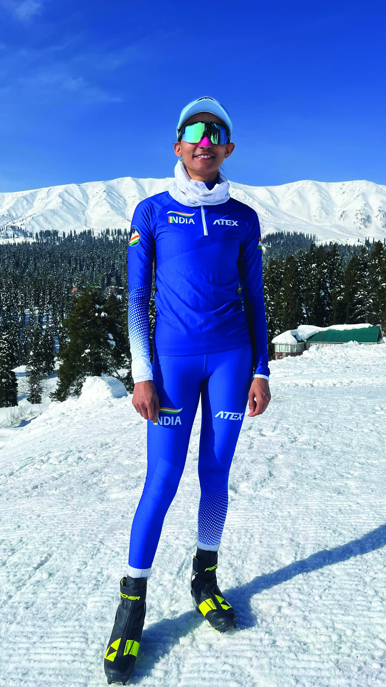
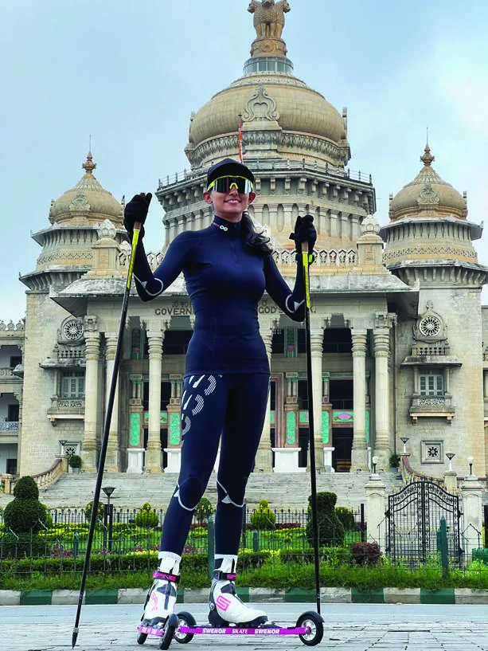
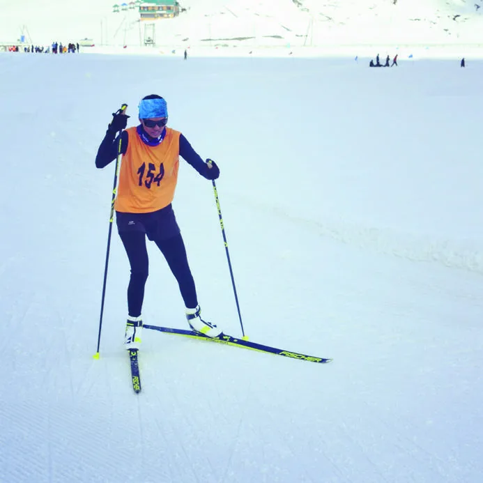
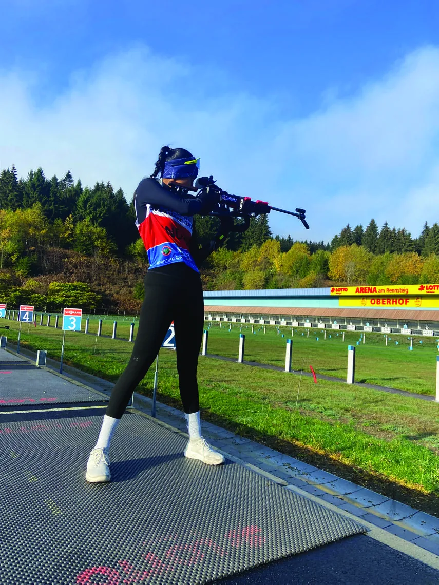
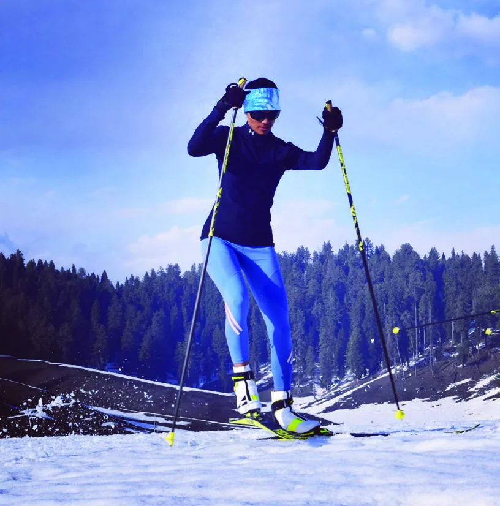
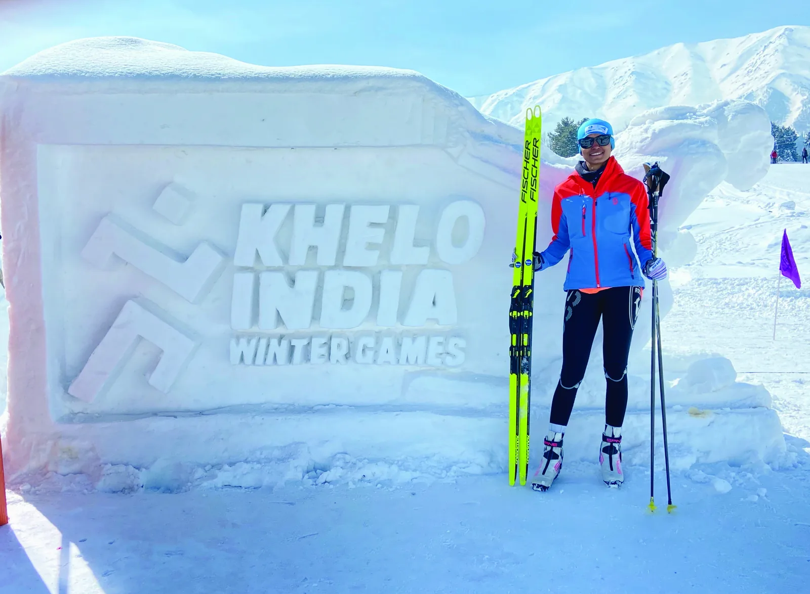
Cross-Country Skier · India
The long way to snow.
Two bronzes in Chile in 2025, a World Cup start list at Ruka in the December that followed, and a sprint quarter-final at the Asian Winter Games. She reached all of it from a country with no cross-country course, no domestic race calendar and no coach in her discipline.
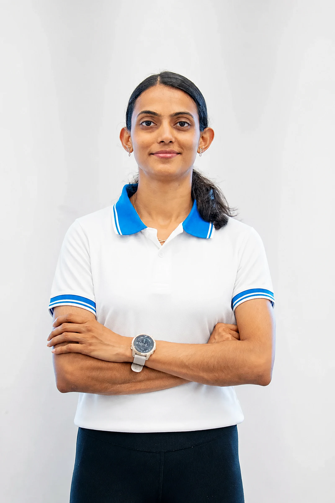
Who she is
She grew up on her family's coffee farm at Perur, near Napoklu in Kodagu, where it has never snowed and where neither of her parents had ever seen snow either. In 2013 she watched a Bollywood film with a trekking sequence in it and went looking for the mountains it was set in. That took her to Darjeeling, to a mountaineering qualification, and to a job instructing in Kashmir, which is where she first put on skis.
Cross-country came later, and secondhand. Watching the 2018 Pyeongchang Games she saw the Norwegian Marit Bjørgen race, and decided that was the event she wanted. She left the instructing job to train full time. Her father, Thekkada Nanjunda, who has spent his life on the coffee farm, told her that if it made her happy she should do it.
Scored and published by the governing body since January 2022
2022–2026Ruka, Trondheim and Davos, inside sixteen days
2025Planica 2023 and Trondheim 2025
2023 · 2025Carried India's flag at the opening ceremony
2025Sprint and 5 km, on the Chilean national championship card
2025Gold in the sprint, bronze at 10 km and 15 km, for Karnataka
2026The sport splits two ways, by technique and by distance. She races every combination.
Skis run inside two grooves cut into the snow. Her sprint at Harbin was a classical race.
A skating stride on a wide groomed piste, no grooves. Her 5 km at Harbin was freestyle, in 18:10.
About 1.3 to 1.5 km, run as knockout heats. She reached the quarter-final at Harbin in 2025.
10 or 15 km, alone against the clock. Bronze at both distances at Gulmarg in 2026.
India has no permanent snow in her discipline, so her year follows it across both hemispheres: Kashmir and Europe from December to March, conditioning on the coast through the Indian summer, then South America or New Zealand in August and September.
It begins in a district that has never had snow and ends on a World Cup start list at Davos.

1995
Born 14 May 1995 at Perur, near Napoklu, in the coffee-growing hills of Kodagu. It rains hard there for four months a year and it has never snowed. The nearest snow sits two thousand kilometres north and four thousand metres up.

2014
She started mountaineering at nineteen, trained at ABVIMAS and at the Himalayan Mountaineering Institute in Darjeeling, and qualified as a mountaineer and instructor by 2017. There was no ski club to come up through. The mountains did that job.

2016
Selected for the NCC contingent at the Republic Day Parade in New Delhi, a year after the All India NCC camp. Her way to altitude came through a cadet uniform.

2018
She had seen snow for the first time only three years before. Skis arrived as equipment for the instructing job, and the same year she climbed Mount Elbrus, at 5,642 m the highest summit in Europe.

2019–2020
She took an international ski instructor certification in New Zealand, on an active volcano, then spent a season skiing abroad. Cross-country followed in 2020, the endurance end of the sport she was already built for.

2022–
Her first FIS-scored races were at Akureyri in northern Iceland, in January 2022. Planica followed in 2023 and Kazakhstan in 2024, then Harbin, Trondheim, Corralco and a first World Cup start at Ruka, all inside 2025.
Eleven starts, every one of them scored and published by FIS.

2022
First FIS-scored starts, in sprint and 10 km interval start.
Sprint qualification 7th · Interval start 6th
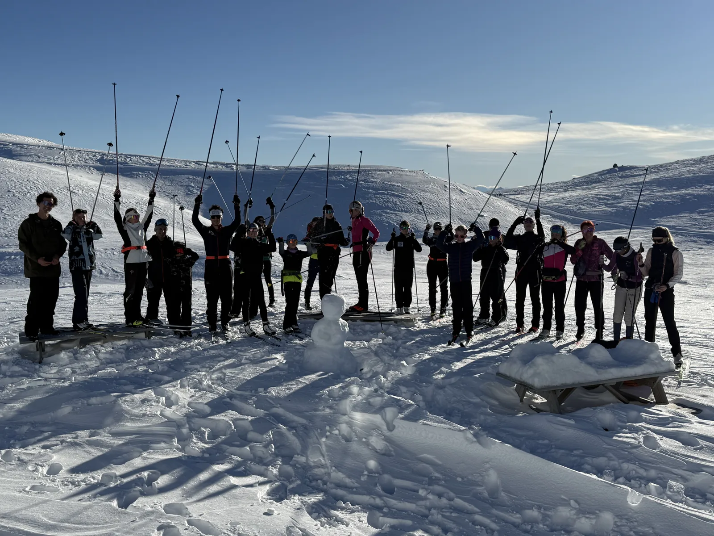
2023
Fourth in both the sprint and the interval start.
4th · 4th

2023
First World Championships start, in the 10 km interval start.
104th

2024
Continental cup racing in sprint and interval start.
42nd · 35th

2024
Three FIS meetings in December, the first sustained block on European snow.

2025
India's flag bearer at the opening ceremony. Reached the sprint quarter-finals and finished the 5 km freestyle in 18:10.4.
Sprint 24th, quarter-finalist · 5 km 25th

2025
Second World Championships, in the sprint and the 10 km interval start.
Sprint 111th · 10 km 105th

2025
Third place on consecutive days at Corralco, in the interval start and the sprint. Reported in India as the first international cross-country medals won by an Indian woman.
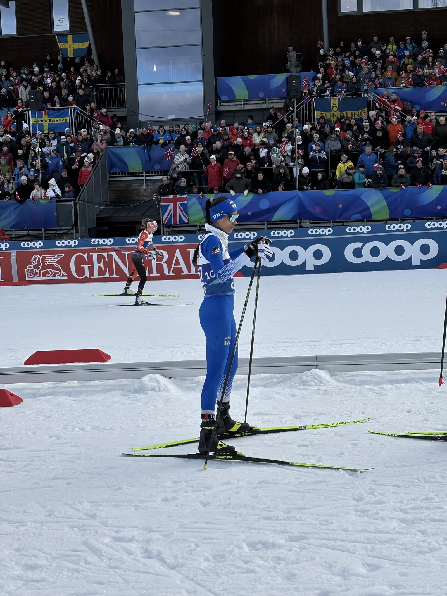
2025
First FIS Cross-Country World Cup start, at 66°N in northern Finland, about forty kilometres short of the Arctic Circle.
10 km 81st · Sprint 77th

2025
Two further World Cup weekends in December, closing the 2025 calendar year.
Best 76th
2026
Gold in the 1.5 km sprint in 4:13.91, bronze in the 15 km and bronze in the 10 km, competing for Karnataka.
One hundred and seven degrees of latitude separate her northernmost start from her southernmost. She races from inside the Arctic Circle to the far side of the Tropic of Capricorn.
| Location | Event | Years | Best result | Latitude |
|---|---|---|---|---|
| Kodagu, India | Home district | 1995 | Home district. 12.4°N, below the Tropic of Cancer. | 12.4°N |
| Gulmarg, India | National championships · Khelo India Winter Games | 2022, 2026 | Gold, Nordic sprint, Khelo India 2026 | 34.0°N |
| Akureyri, Iceland | FIS races | 2022, 2023, 2024 | 4th, sprint and interval start, 2023 | 65.7°N |
| Planica, Slovenia | Nordic World Ski Championships | 2023 | World Championships debut, 104th · FIS race, 31st | 46.5°N |
| Schuchinsk, Kazakhstan | Eastern Europe Cup | 2024 | 35th, Eastern Europe Cup, 2024 | 52.9°N |
| Idre, Sweden | FIS races | 2024 | 61st, sprint, 2024 | 61.9°N |
| Seefeld, Austria | FIS races | 2024 | 111th, interval start, 2024 | 47.3°N |
| Lygna, Norway | FIS races | 2024 | 2024 Scandinavian racing block | 60.4°N |
| Harbin, China | Asian Winter Games | 2025 | 23rd, sprint classical, quarter-finalist, 2025 | 45.8°N |
| Trondheim, Norway | World Championships · World Cup | 2025 | World Championships and a World Cup start, 2025 | 63.4°N |
| Antillanca, Chile | FIS race | 2025 | 4th, interval start, 2025 | -40.8°S |
| Corralco, Chile | South American Cup · national championships | 2025 | 3rd, sprint and 5 km, 2025 | -38.5°S |
| Ruka, Finland | World Cup | 2025 | World Cup debut, 76th in the sprint, 2025 | 66.2°N |
| Davos, Switzerland | World Cup | 2025 | 76th, World Cup sprint and interval start, 2025 | 46.8°N |
Elbrus in 2018, the highest point in Europe. Ruapehu in 2019, an active volcano with a ski field on it, where she took the certification that let her teach abroad.

5,642 m
Russia
The highest summit in Europe.
2,797 m
New Zealand
An active volcano, and a ski field. She took her international skiing certification here in 2019.
 Darjeeling and Manali
Darjeeling and ManaliGrade A Adventure Course at ABVIMAS, then Special Basic Mountaineering at HMI Darjeeling.
 Himalayan Mountaineering Institute
Himalayan Mountaineering InstituteMethod of Instruction at HMI Darjeeling, then a year there as a guest instructor.
Gulmarg, KashmirBasic and intermediate skiing at the Jawaharlal Institute of Mountaineering, advanced at the Indian Institute of Skiing and Mountaineering in Kashmir.
 Mt. Ruapehu, New Zealand
Mt. Ruapehu, New ZealandSnowsports instructor certification at Mt. Ruapehu, the first she earned outside India.
| Year | Event | Location | Result | Medal | Source |
|---|---|---|---|---|---|
| 2026 | Khelo India Winter GamesSprint 1.5 km | Gulmarg | 4:13.91 | gold | Khelo India |
| 2026 | Khelo India Winter Games15 km | Gulmarg | 53:20.44 | bronze | Khelo India |
| 2026 | Khelo India Winter Games10 km | Gulmarg | 33:22.03 | bronze | Khelo India |
| 2025 | FIS Cross-Country World Cup10 km interval start | Ruka, Finland | 81st | FIS | |
| 2025 | FIS Cross-Country World CupSprint and 10 km interval start | Davos, Switzerland | 76th · 76th | FIS | |
| 2025 | Nordic World Ski Championships10 km interval start | Trondheim, Norway | 105th | FIS | |
| 2025 | Asian Winter GamesSprint classical, quarter-finalist | Harbin, China | 24th | Asian Winter Games | |
| 2025 | Chilean national championships (FIS)Interval start | Corralco, Chile | 3rd | bronze | FIS |
| 2025 | Chilean national championships (FIS)Sprint | Corralco, Chile | 3rd | bronze | FIS |
| 2023 | Nordic World Ski Championships10 km interval start | Planica, Slovenia | 104th | FIS | |
| 2023 | FIS racesSprint and interval start | Akureyri, Iceland | 4th · 4th | FIS |
Every article written about her, and six seasons of photographs, in one place.
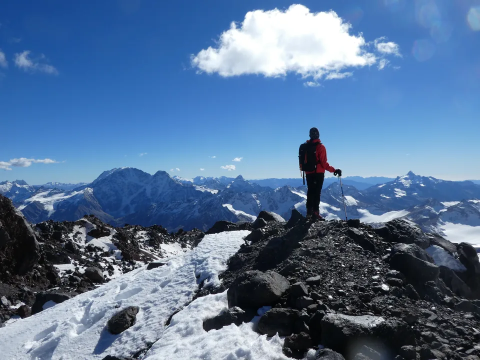
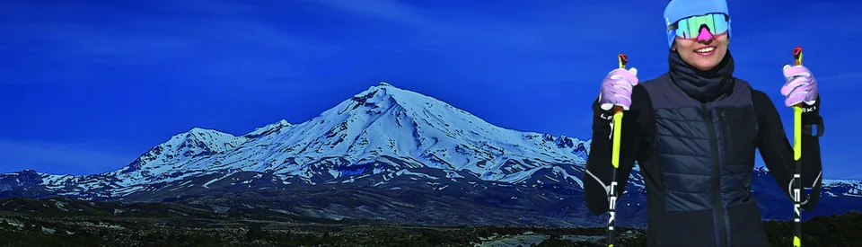
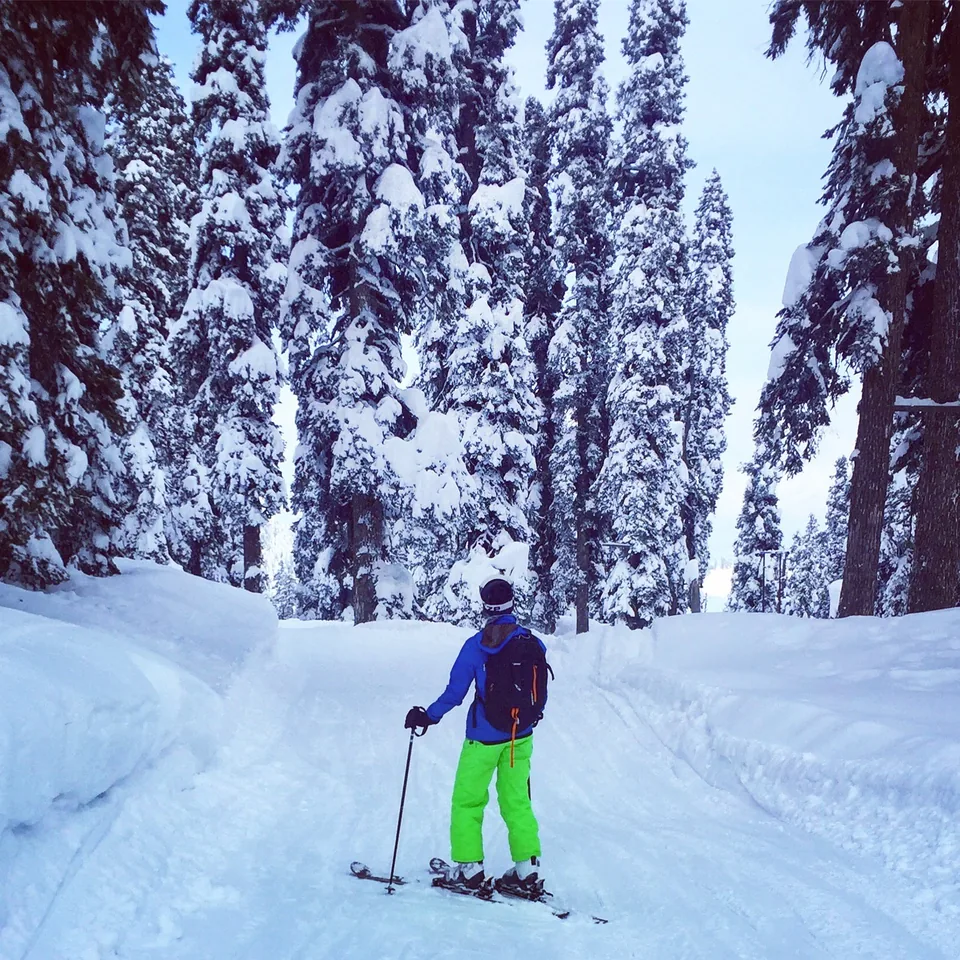

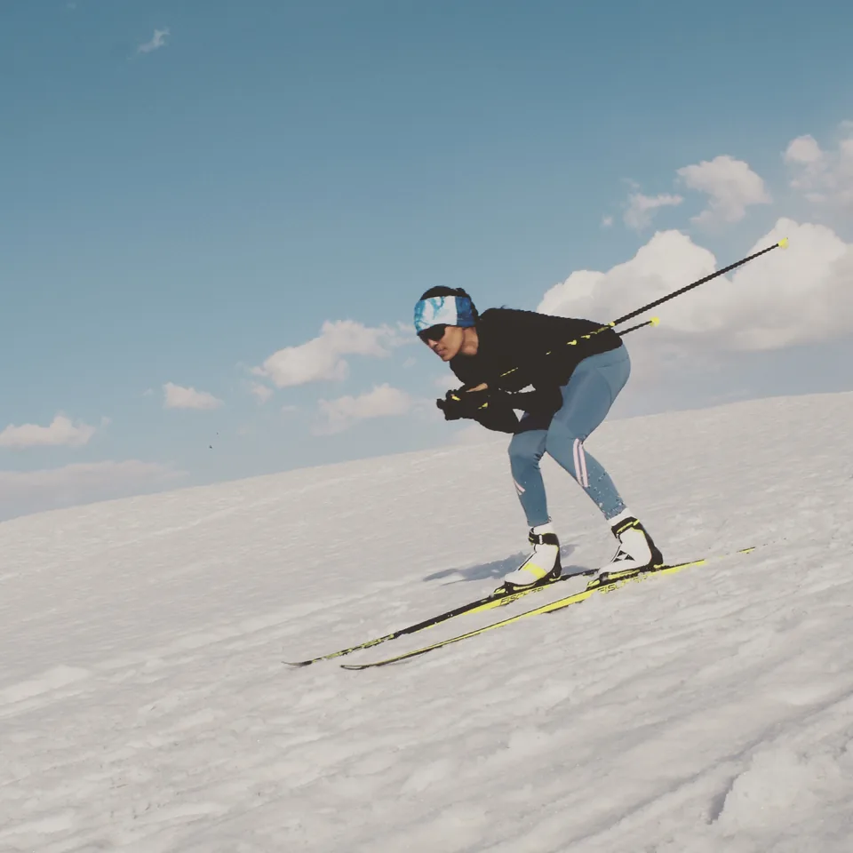
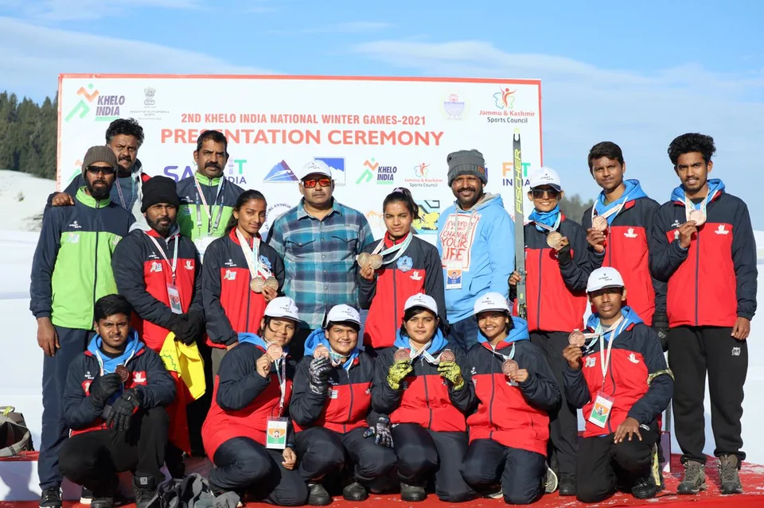
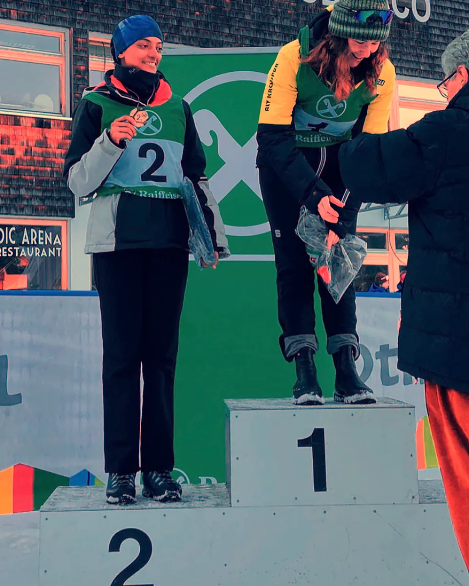
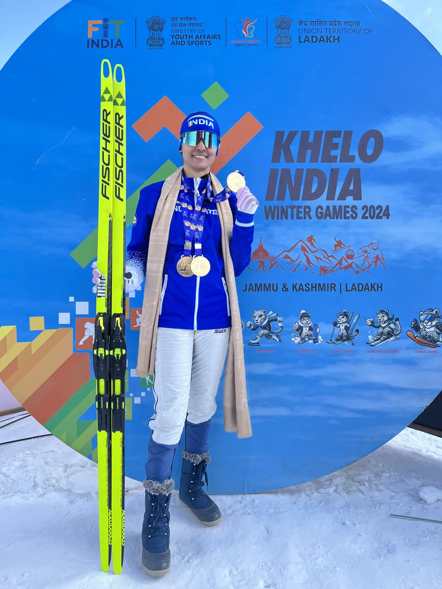
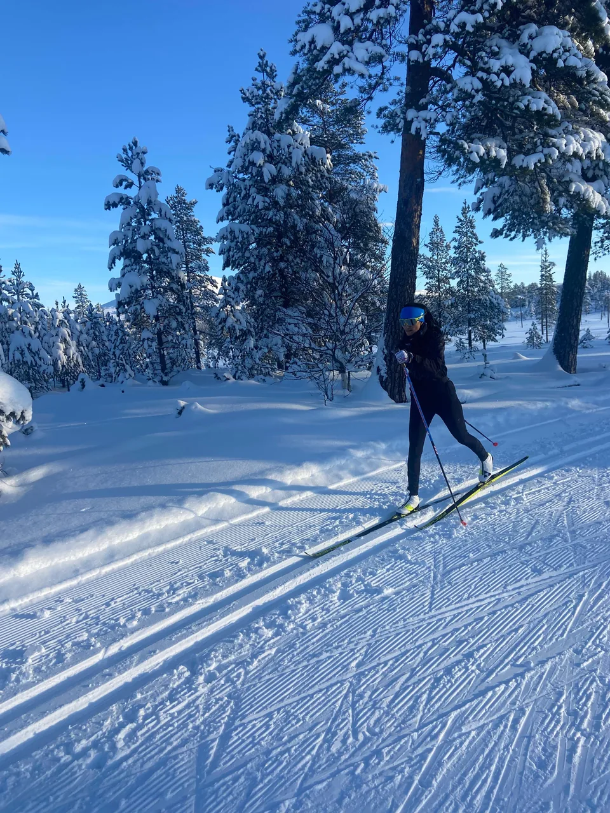
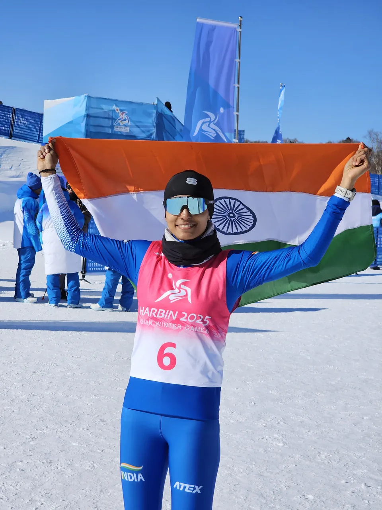
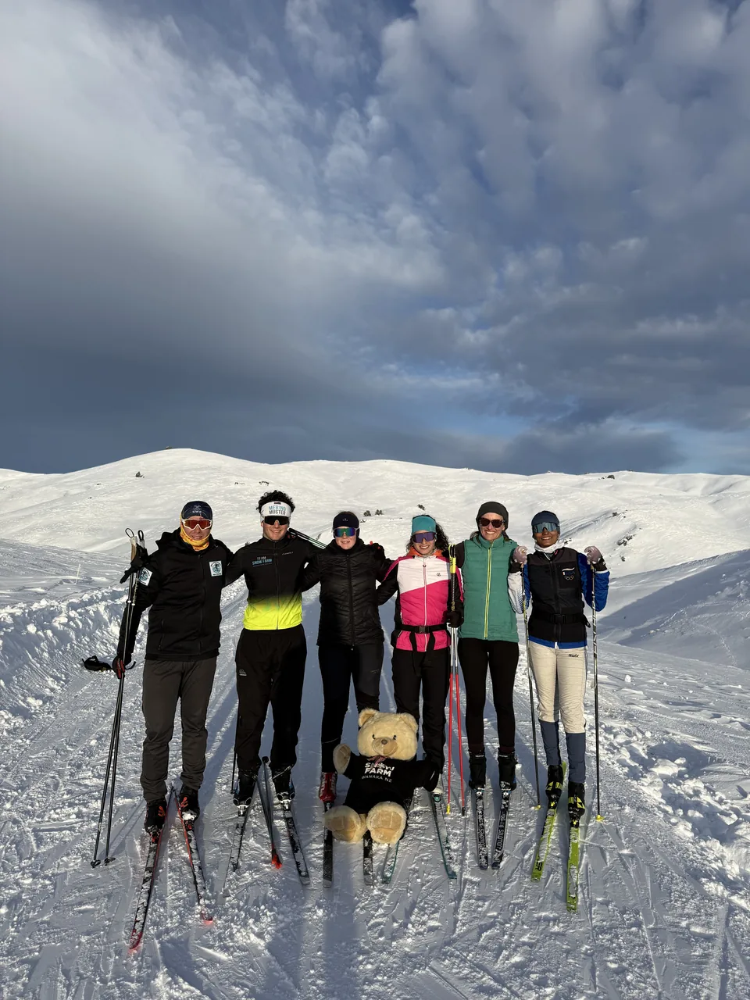
Four seasons between here and a start list in the French Alps. Everything above this is on the record. What follows is a plan.
Back to the start list, with two editions already behind her.
Qualification for both, on stronger international form.
World Championships, and the points that decide 2030.
The reason the rest of it is planned the way it is.
2030
French Alps, France · 1 to 17 February 2030
Four seasons. Countless races. One start line.
Every result, every FIS point, every decision, building towards the Winter Olympics.
Qualifying is the target. It is not the whole of the ambition.
Every season she competes in is assembled from other countries' calendars. There is no home fixture for anyone to turn up to.
Most people in India have never watched a cross-country race. Part of the job is explaining what it is and why the distances are hard.
A pathway that exists on paper is different from one somebody has already walked. Being the first is the easy part to celebrate. Being followed is the harder one, and it is the one she is working on.
An Indian woman on a World Cup start list changes what the next selection meeting thinks is realistic.
Four talks, all of them drawn from the same decade of doing it. Each one takes a problem she actually had to solve and shows the working.
What it actually takes to reach an international start line when your country has none of the infrastructure the sport assumes you have.
Kodagu 2013 to a World Cup start list, 2025
Mountaineering, instructing, and how an unglamorous apprenticeship turned into an endurance career.
ABVIMAS and HMI Darjeeling, 2013–2017
The practical reality of being the sole woman on a team sheet, and what changes when somebody has gone first.
India’s flagbearer, Asian Winter Games 2025
What a 10 km interval start costs, how a season is planned, and why most of the work is invisible.
10 km interval start, Ruka World Cup, 2025
The athlete is on the FIS record. The storyteller is the reason there were seasons to race at all. Almost every trip had to be paid for by somebody she talked into it first.
Her race season runs from late November to March. Dates inside it are limited.
She races a full FIS calendar largely at her own expense, and trains with other nations' squads because India fields none in her discipline. A season has a fixed shape, and support lands at particular points inside it.
Athlete support through their sports programme: sports psychologist, nutritionist and strength coach, and conditioning blocks in Mumbai through the Indian summer.
 State support
State supportState backing from her home state, the department that has recognised her results and carried her through domestic selection and the Khelo India programme.
The European season opens in late November against athletes who have been on snow since October. A pre-season block in Scandinavia or the Alps buys those six weeks back, and it is the difference between racing into form and racing to find it.
December 2025 ran Ruka to Trondheim to Davos inside sixteen days. The federation covers entry and accommodation on some of it. Flights, transfers and everything between the start lists are hers.
Every other athlete on a World Cup start list has a service team reading the snow that morning and grinding skis to it. She does not. Wax chosen for the wrong temperature costs more time than any amount of fitness gets back.
Skis are ground for the snow they will meet, so one pair cannot cover a season. A full race set is classic and freestyle in cold, normal and warm grinds, with poles, boots and a race suit behind them.